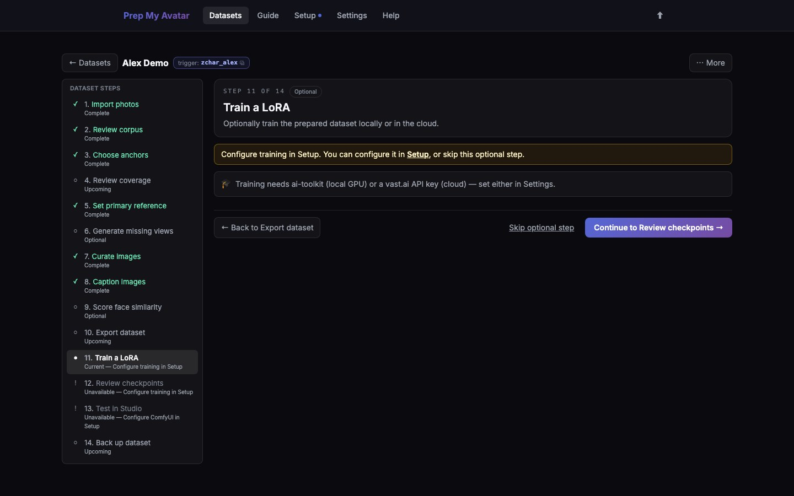

First run · 18 of 21
Step 18: Train a LoRA
Training turns the kept images and captions into a .safetensors LoRA for one model family. This optional step can use configured local ai-toolkit or a vast.ai cloud worker. If you do not want to train in Prep My Avatar, skip Steps 18–20 and continue to Step 21 to back up the dataset.

Before you begin
Training can take significant time, disk space, GPU memory, and—for cloud runs—money. Complete curation, captions, leak review, and source-rights confirmation. Accept any required base-model licence and add its Hugging Face token before launch.
Do this
- Open Train a LoRA in the dataset step navigator. Its URL ends in
/trainand it is labelled Optional. - Choose the LoRA family that matches the target model you intend to use.
- Read the readiness summary and resolve blocking findings.
- Keep the automatic step count and default recipe for a first run. Open Advanced options only when you understand the setting you need to change.
- Select Train the LoRA for the configured local trainer, or Train in cloud.
- Read the Before training confirmation. Fix duplicate pairs or caption leaks shown there.
- Confirm the launch. For cloud training, check the quoted limits before accepting.
- Keep the app running for local training. Follow either type of run from Runs.
- Select Continue to Review checkpoints, or Skip optional step to move through the remaining optional training pages toward backup.
You are finished when
The run reaches Finished and at least one checkpoint appears; continue to Step 19. If it fails, open the run log, keep the exact error, fix that cause, and use retry rather than starting several duplicate cloud jobs. If you chose not to train, continue to Step 21 instead.